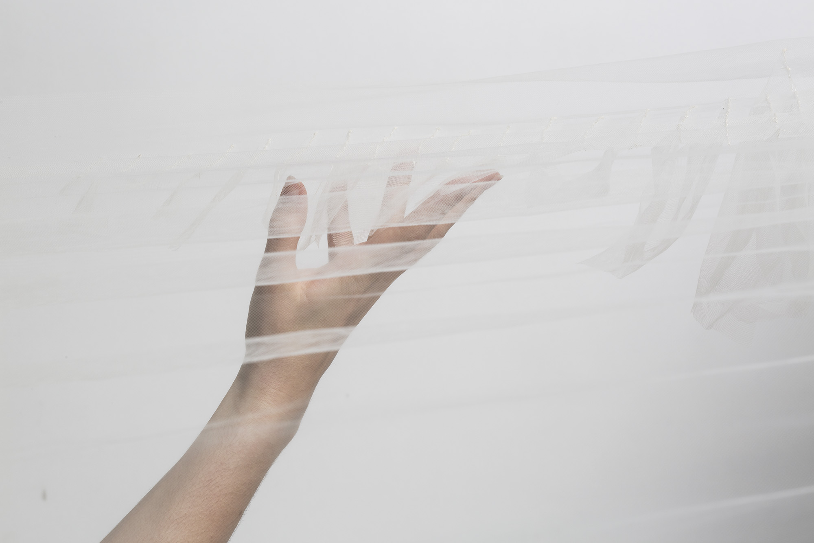
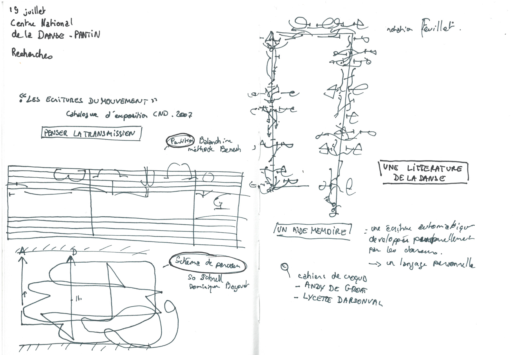

Résidence de Développement Technique et Lutherie Numérique à Artificiel avec Alexandre Burton
Résidence de performance et interactivité sonore à l'espace Van Grimbe Corps Secret
Résidence de performance et interactivité sonore et lumineuse à CCOV
Équipe en Résidence :
Chorégraphie et Gardienne de l’écologie artistique Audrey Rochette
Conception Sonore Dominic Jasmin
Direction Technique Alice Sanz
Performance Mathilde Loslier Pellerin et Élise Bergeron
Conception d’éclairage Karine Gauthier
Production Emilie Voyer
Mentor et Support Technique Stéphane Gladyszewski
Archives Photos Philippe Poirier
projet en cours
——————————
Toucher sensible, exploration sonore
Dispositif interactif MIDI explorant le toucher
et le son. Une libre interpretation du Body Mind Centering, présenté lors d’une formation somatique au département de danse de l’UQAM, par Mariko Tanabe.
Étudiantes testeuses : Kerwin Barrington, Mathilde Loslier-Perrin, Claudia Garcia, Audrey Rochette
Programmation et Recherche sonore un projet réalisé en collaboration avec Nicholas Shulman
décembre 2019
Passager.01 Cette expérience consiste à revêtir une membrane sono-réactive conçue dans une matière extrêmement flexible.
En jouant sur la tension du tissu, vous déclenchez différents points sonores répartis sur la surface du textile.
Selon votre gestuelle, un écho se déploie dans l’espace invitant au mouvement suivant,
à la découverte de votre espace sonore."
/>
Passager.02 En mobilisant partiellement la partie dorsale, le poids de ce module vous déséquilibre et vous pousse
à vous redresser. Vos mouvements déplacent des micros piézoélectriques incrustés au cœur des excroissances.
La résonance produite vous incite davantage à ressentir qu’à voir. "
/>
 Passager.03 Dans une une posture d’éveil, ce module vous invite à effleurer des pans vaporeux.
En vous égarant sous sa surface, il vous incite à étirer vos membres, à atteindre des zones “hors corps”.
Au contact du voile, vous plongez dans un espace sonore composé de basses fréquences."
/>
yogeek est un atelier gestuel ouvert à tous. Il vise à se « remettre dans son corps », à entrer dans son geste,
grâce à la technologie. Par un déclic, une prise de conscience, une découverte ou simplement un moment
de détente, nous souhaitons à travers yogeek, amener les utilisateurs à adopter une posture d’interaction active
et créative en se laissant guider par l’impulsion du corps.
Nos prototypes ont étés pensés pour explorer différentes postures durant l’atelier yogeek.
Il y a des surface, à effleurer, écouter, à porter entièrement ou partiellement. Qu’elles nous enveloppement
ou nous bousculent, elles nous incitent à bouger autrement tout en proposant une expérience sensible
entre textile et numérique.
Direction Artistique, Direction Technique et Design sonore un projet réalisé en collaboration avec Alice Herbreteau et Charlène Brun co-fondatrices du collectif @input_lab
juin 2019
——————————
Le geste expressif, Étude de l’influence des outils technologiques sur les pratiques et les représentations de la danse — Mémoire de recherche
Le chorégraphe Maurice Béjart définit la danse comme une tension rythmique qui amène à se prolonger,
sortir de son enveloppe corporelle pour inventer d’autres temps, d’autres espaces, d’autres mondes.
Comme une action expressive vers l’extérieur, nous dansons pour créer un « état de soi augmenté ».
Dès lors, l’outil technologique apparaît comme un partenaire évident à l’expression et l’expansion du corps.
À travers cette recherche, j'ai fais des arts vivants mon terrain d’enquête afin d’étudier l’influence
des outils technologiques sur les pratiques et les représentations de la danse.
Impactant tant bien la composition chorégraphique que la scénographie, la popularisation des performances multimédias se déploie à mesure que les systèmes informatiques se mêlent à nos vies quotidiennes.
Comme pour la musique, la technologie a fait évoluer les outils de composition, d’enregistrement
de la danse. L’utilisation d’outils technologiques comme moyen de sauvegarde, mais aussi comme appui créatif, nous aident à analyser l’impact de la technologie sur la sensibilité et l’expressivité des corps en mouvement.

Projet de recherche
Conception et édition réalisée en collaboration avec Alice Herbreteau et Charlène Brun co-fondatrices du collectif @input_lab
juin 2019
——————————
Duel sonore, Prototype d'une joute interactive
Élaboration des armures et épées connectées à un système sonore diffusant différentes combinaisons de fréquences à chaque contact entre deux adversaires.
Prototypes réalisés en une semaine lors d'un workshop à thématique sonore et sportive organisé par le collectif de musique expérimentale BRUTPOP.
Conception et réalisation en collaboration avec Sylvie Nguyen
juin 2019
——————————
Cinéphonie, Mise en scène des fonds d'archives des cinémas Gaumont Pathé
Cinéphonie est un projet de valorisation permettant d’explorer l’univers de Gaumont
à travers le sens du toucher afin de faire revivre les paysages sonores des films.
Chaque objet disposé dans l’espace renferme un extrait sonore qui retentit lorsque
le public interagi avec lui. Une écoute active permettra au visiteur d’apprécier de façon inhabituelle les oeuvres du 7ème art par le son et le mouvement.
Design sonore et scénographie, conception et réalisation en collaboration avec Solène Lombard
juin 2019
——————————
Djabara, La virtualité du rythme
conception masque de réalité virtuelle, univers 3D, expérience VR et livre numérique
Inspiré d’un instrument à percussion d’Afrique de l’Ouest, le shékéré,
ce masque nous immerge dans un univers sensoriel où le son et la matière s’accordent sur le rythme du corps.
J’ai voulu travailler sur la musicalité du corps en mouvement. À chaque geste, même minime, près de deux milles perles de bois, de métal, de béton s’entrechoquent dans un son qui effleure nos oreilles, les perles nous glissent sur la peau.
Entre immersion et destablilisation, le masque appelle le mouvement.
Parallelement à ce projet, j’ai conçus à partir du «Livre infini», un dispositif d’Albertine Meunier, un objet-livre présentant l’univers du masques. Le livre interactif ne dévoile son contenu qu’une fois la page tournée.
Le livre de Djabara renferme un personnage sonore dansant au rythme de son propre corps. Comme un battement de coeur, le son l’accompagne à chaque geste, chaque mouvement. Son histoire est gravée dans quatre plaques de bois où la lumière joue avec les formes et les contreformes. Djabara apparaît et disparaît entre les pages, insaisissable.
Entre le tangible du matériau et la virtualité de la lumière, la projection met en tension la relation complexe entre le corps et le son.
À travers le masque DJABARA, je propose une réinterpretation du spectacle
de la programmation MARTO!, Robot, l’amour éternel, de la danseuse
Kaori Ito dans un univers virtuel organique et oppressant.
En représentant le corps comme une enveloppe vide, il nous devient étranger,
agressif et incontrolable.
Présenté du 8 février au 10 mars dans les différents théâtres du Festival MARTO!
et le 16 mars lors du Hacking de l’Hotel de Ville de Paris
ainsi que du 16 au 27 mai 2018 au festival Ateliers Partagés à la Gaité Lyrique à Paris Conception, réalisation, programmation et modélisation
mai 2018
——————————
×
Alice Sanz
Artiste Numérique et Direction Technique
Depuis 5 ans, je nourris mon profil artistique interdisciplinaire à travers divers projets maitrisant autant les outils graphiques traditionnels (photographie, graphisme, édition) que les nouvelles technologies (programmation, modélisation 3D,conception sonore, installation interactive, e-textile).
Après un diplôme supérieur d’art appliqué en design numérique à l’École Supérieure des Arts et des Industries Graphique à Paris, je mène aujourd’hui mes recherches au département de danse de l'Université du Québec à Montréal où j'étudie les interactions entre les corps en mouvements et les machines à travers le milieu de la danse.